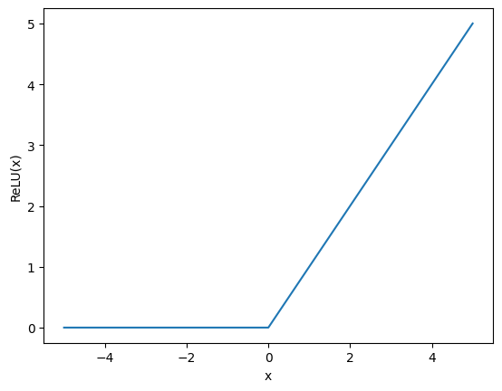

import numpy as np
import matplotlib.pyplot as plt
Arquiteturas Especializadas em Visão Computacional#
A visão computacional e as redes neurais evoluíram de forma interligada ao longo das últimas décadas, com avanços em uma área frequentemente impulsionando o progresso da outra. Inicialmente, o foco da visão computacional estava em algoritmos projetados manualmente para detecção de bordas, segmentação e reconhecimento de padrões. No entanto, esses métodos enfrentavam limitações ao lidar com a complexidade e variabilidade das imagens do mundo real. A introdução de redes neurais artificiais, e mais tarde de redes neurais convolucionais (CNNs), transformou a maneira como sistemas automatizados interpretam imagens, permitindo que os modelos aprendessem representações diretamente dos dados. Isso marcou o início de uma nova era, em que o aprendizado profundo começou a superar as abordagens tradicionais em várias tarefas de visão computacional, como classificação de imagens, detecção de objetos e segmentação semântica. Esse desenvolvimento conjunto continua a evoluir, com as redes neurais modernas desempenhando um papel central na visão computacional aplicada a diversos domínios, desde veículos autônomos até diagnósticos médicos.
Redes Neurais Convolucionais#
As Redes Neurais Convolucionais (CNNs) são uma classe de redes neurais projetadas especificamente para processar dados com uma estrutura de grade, como imagens. Elas são formadas por camadas de convolução, que aplicam filtros para extrair características locais do dado, como bordas e texturas. Esses filtros são aplicados em pequenas regiões da entrada, permitindo que a CNN capture padrões espaciais e hierárquicos. Além das camadas convolucionais, as CNNs incluem camadas de pooling, que reduzem a dimensionalidade dos dados, preservando as informações mais relevantes. Graças à sua capacidade de detectar e aprender características espaciais, as CNNs são amplamente utilizadas em tarefas como reconhecimento de imagens, segmentação e detecção de objetos.

Internamente, o processo de convolução envolve o deslizamento de um filtro (ou kernel) sobre a entrada (imagem), onde o mesmo conjunto de pesos é aplicado a diferentes regiões da imagem. A cada posição, o filtro calcula a soma ponderada dos valores dos pixels sobrepostos, resultando em uma nova matriz, chamada de mapa de características. Esse compartilhamento de pesos permite que a CNN aprenda a detectar padrões como bordas, texturas ou formas, independentemente da posição desses padrões na imagem. Isso torna a convolução altamente eficiente, pois reduz drasticamente o número de parâmetros comparado a uma rede totalmente conectada (MLP), além de explorar a estrutura local dos dados de forma eficaz.
Idéias Iniciais#
As redes neurais convolucionais (CNNs) têm suas raízes em pesquisas realizadas na área de biologia. Uma das primeiras inspirações foi a compreensão biológica do cortex visual de mamíferos, que revelou que neurônios na visão são organizados de maneira hierárquica, detectando bordas e padrões simples em diferentes áreas do campo visual. Na década de 1980, o pesquisador Kunihiko Fukushima desenvolveu o Neocognitron, uma rede neural hierárquica inspirada na organização visual do cérebro. O Neocognitron introduziu conceitos de convolução e pooling (ou subsampling), permitindo o reconhecimento de padrões visuais. Embora fosse uma inovação marcante, o Neocognitron não utilizava aprendizado supervisionado, sendo pré-configurado em grande parte. Foi apenas com o surgimento de técnicas de treinamento supervisionado, como o backpropagation, que as CNNs começaram a evoluir em direção ao que conhecemos hoje, culminando mais tarde na LeNet-5 de Yann LeCun, que consolidou esses avanços no reconhecimento de dígitos manuscritos.
LeNet-5 (1998)#
A LeNet-5, desenvolvida por Yann LeCun em 1998, foi uma das primeiras redes neurais convolucionais de sucesso aplicadas ao reconhecimento de dígitos manuscritos, mais especificamente no conjunto de dados MNIST. A arquitetura da LeNet-5 consistia em várias camadas de convolução e pooling, seguidas de camadas totalmente conectadas para classificação. Ela usava convoluções para extrair características visuais locais e pooling (ou subsampling) para reduzir a dimensionalidade, preservando as informações mais importantes. A rede era treinada utilizando backpropagation, o que permitiu que ela ajustasse seus pesos de forma eficiente. A LeNet-5 foi pioneira na utilização de CNNs em aplicações reais, como o reconhecimento automático de números em cheques bancários, e é considerada um marco no desenvolvimento das redes convolucionais modernas.
 LeNet5, desenhada com NN-SVG
LeNet5, desenhada com NN-SVGApós isto, o progresso nas redes neurais convolucionais foi relativamente lento, em grande parte devido a limitações computacionais e à falta de grandes conjuntos de dados. Durante esse período, as CNNs eram usadas em aplicações específicas, mas não haviam atingido ampla adoção. No entanto, avanços como o uso de GPUs para acelerar o treinamento de redes profundas e o surgimento de grandes bases de dados, como o ImageNet, criaram as condições para que, em 2012, a AlexNet revolucionasse a visão computacional, demonstrando o poder das CNNs em tarefas complexas de classificação de imagens.
AlexNet (2012)#
A AlexNet, desenvolvida por Alex Krizhevsky, Ilya Sutskever e Geoffrey Hinton em 2012, marcou um ponto de virada no campo da visão computacional ao vencer o ImageNet Large Scale Visual Recognition Challenge com uma margem significativa. Sua arquitetura foi composta por 8 camadas, sendo 5 camadas convolucionais seguidas de 3 camadas totalmente conectadas, além de funções de ativação ReLU para acelerar o treinamento e camadas de Local Response Normalization para melhorar a generalização. AlexNet introduziu o uso extensivo de GPUs para treinar redes profundas em grandes quantidades de dados, e utilizou técnicas como dropout para combater o overfitting e data augmentation para melhorar a generalização. A AlexNet demonstrou a eficácia das redes profundas e consolidou o uso de CNNs para classificação de imagens, influenciando toda uma nova geração de arquiteturas profundas.
A arquitetura da AlexNet possui as seguintes camadas:
Entrada: Imagem de 3 canais com tamanho 227x227
Convolução 1: kernel 11x11 com 96 canais de saída, stride 4 e ativação ReLU
Max-Pooling 1: 3x3 com stride 2
Convolução 2: kernel 5x5 com 256 canais de saída, stride 1, padding 2 e ativação ReLU
Max-Pooling 2: 3x3 com stride 2
Convolução 3: kernel 3x3 com 384 canais de saída, stride 1, padding 1 e ativação ReLU
Convolução 4: kernel 3x3 com 384 canais de saída, stride 1, padding 1 e ativação ReLU
Convolução 5: kernel 3x3 com 256 canais de saída, stride 1, padding 1 e ativação ReLU
Max-Pooling 3: 3x3 com stride 2
Totalmente Conectada 1: 4096 neurônios, ativação ReLU e Dropout
Totalmente Conectada 2: 4096 neurônios, ativação ReLU e Dropout
Saída: 1000 neurônios, ativação Softmax
 AlexNet, desenhada com NN-SVG
AlexNet, desenhada com NN-SVGReLU#
A função de ativação ReLU (Rectified Linear Unit), popularizada com a AlexNet, é uma das mais utilizadas em redes neurais modernas devido à sua simplicidade e eficácia. Sua fórmula é \(f(x)=\text{max}(0,x)\) , o que significa que ela transforma valores negativos em zero, enquanto mantém valores positivos inalterados. Isso introduz não-linearidade na rede, permitindo que ela aprenda padrões complexos. Comparada a funções de ativação anteriores, como sigmoid e tanh, a ReLU tem a vantagem de ser computacionalmente mais eficiente e de mitigar o problema do desvanecimento do gradiente, uma vez que seus gradientes são constantes para entradas positivas. No entanto, ReLU também pode sofrer com o problema de “neurônios mortos” quando muitas unidades se tornam zero, o que pode ser tratado com variantes como Leaky ReLU.
x = np.linspace(-5, 5, 101)
y = np.array([max(i, 0) for i in x])
plt.plot(x, y)
plt.xlabel('x')
plt.ylabel('ReLU(x)')
plt.show()

Local Response Normalization#
A Local Response Normalization (LRN) é uma técnica de normalização usada em redes neurais convolucionais, introduzida pela primeira vez na AlexNet. Inspirada pela inibição lateral em neurônios biológicos, a LRN normaliza a ativação de um neurônio considerando a resposta de seus neurônios vizinhos dentro de uma pequena região. Isso ajuda a destacar ativações mais fortes e suprimir as mais fracas, promovendo uma competição entre neurônios e melhorando a generalização da rede. Embora tenha sido popular em arquiteturas antigas, como AlexNet e GoogLeNet, o LRN foi substituído por métodos mais modernos, como o Batch Normalization

Data Augmentation#
Data augmentation é uma técnica amplamente utilizada em aprendizado profundo para aumentar artificialmente o tamanho de um conjunto de dados de treinamento, aplicando transformações nos exemplos existentes. O objetivo é criar variações dos dados originais, como rotações, translações, espelhamentos, alterações de brilho, entre outras, para tornar o modelo mais robusto e generalizável. Isso é especialmente útil em tarefas como classificação de imagens, onde a diversidade dos dados pode ser limitada. Ao expor o modelo a múltiplas variações dos mesmos exemplos, o data augmentation ajuda a prevenir overfitting e a melhorar o desempenho do modelo em novos dados. Essa técnica é frequentemente usada em conjunto com outras formas de regularização, como o Dropout, para aumentar a capacidade de generalização das redes neurais.
 Exemplo de Data Augmentation, conforme documentação do PyTorch
Exemplo de Data Augmentation, conforme documentação do PyTorchDropout#
O Dropout é uma técnica de regularização introduzida para reduzir o overfitting em redes neurais, particularmente em redes profundas. Ele funciona desativando aleatoriamente uma fração dos neurônios em cada camada durante o treinamento, o que força a rede a não depender excessivamente de neurônios específicos. Essa abordagem faz com que a rede aprenda representações mais robustas e generalizáveis, já que diferentes subconjuntos de neurônios são ativados em cada iteração. Durante a fase de teste, todos os neurônios são utilizados, mas os pesos são ajustados para compensar as desativações feitas no treinamento. O Dropout provou ser uma técnica eficiente em melhorar a capacidade de generalização das redes, especialmente em tarefas de classificação complexas.

Descobertas mais recentes#
O uso Dropout é questionado no artigo intitulado Rethinking Generalization (2017), de Zhang et al., no qual os autores argumentam que técnicas de regularização, como o Dropout, podem não ser tão eficazes quanto se pensava em redes profundas. O estudo mostrou que redes neurais profundas conseguem memorizar dados mesmo quando treinadas em conjuntos de dados completamente aleatórios. Isso sugere que, em vez de confiar exclusivamente em técnicas como Dropout para melhorar a generalização, redes neurais podem ter uma alta capacidade de generalizar mesmo sem regularização explícita. Esse achado contraria a visão tradicional de que a regularização como o Dropout seria essencial para evitar overfitting, propondo que a capacidade de generalização das redes profundas pode ser explicada por fatores além dessas técnicas, como a arquitetura ou o algoritmo de otimização.
VGG (2014)#
A VGG (Visual Geometry Group), introduzida por Simonyan e Zisserman em 2014, é uma arquitetura de rede neural convolucional projetada para classificação de imagens, que se destacou no desafio ImageNet. O principal avanço da VGG foi o uso de uma grande profundidade de camadas, com versões como VGG-16 e VGG-19, que têm 16 e 19 camadas de aprendizado, respectivamente. A arquitetura se caracteriza pelo uso de filtros convolucionais pequenos de tamanho 3x3 empilhados em sequência, juntamente com camadas de pooling para reduzir a dimensionalidade. A simplicidade dessa abordagem, aliada à profundidade, permitiu um grande aumento na capacidade de extração de características, melhorando o desempenho em várias tarefas de visão computacional. Embora a VGG tenha um alto custo computacional devido ao número elevado de parâmetros, ela teve uma influência significativa no desenvolvimento de redes neurais profundas.

Inception/GoogleNet (2014)#
A Inception, introduzida por Szegedy et al. em 2014 no modelo GoogLeNet, representou uma importante inovação nas redes neurais convolucionais, projetada para melhorar tanto a eficiência computacional quanto o desempenho em tarefas de visão computacional, como o ImageNet Challenge. A principal inovação da arquitetura Inception é o módulo Inception, que aplica convoluções de diferentes tamanhos (1x1, 3x3, 5x5) e pooling em paralelo na mesma camada. Essa abordagem permite que a rede capture informações em múltiplas escalas e resoluções, melhorando a capacidade de extração de características sem aumentar significativamente o número de parâmetros.
Outras inovações deste modelo foram a introdução de convoluções assimétricas, convoluções 1x1, e classificadores auxiliares. Essas inovações tornaram a GoogLeNet, com sua arquitetura Inception, uma das primeiras redes profundas a ser treinada com eficiência em grande escala, equilibrando profundidade e eficiência computacional. Essa arquitetura demonstrou que era possível criar redes neurais profundas que exploravam tanto a largura quanto a profundidade, sem incorrer no aumento exponencial de parâmetros, como acontecia com modelos anteriores. As convoluções assimétricas, em particular, foram um elemento chave para melhorar a flexibilidade e a eficiência da rede, contribuindo para sua escalabilidade e sucesso em competições de visão computacional.


Convoluções Assimétricas#
Além das convoluções de múltiplas escalas, um avanço significativo que surgiu em versões posteriores, como na Inception v2 e Inception v3, foi o uso de convoluções assimétricas, como as convoluções 3x1 e 1x3. Essas convoluções assimétricas foram introduzidas para melhorar ainda mais a eficiência da rede. Ao decompor uma convolução regular de 3x3 em duas operações menores, como uma convolução 3x1 (captura de características na dimensão horizontal) e uma 1x3 (captura de características na dimensão vertical), a rede pode manter o mesmo campo receptivo de uma convolução 3x3, porém com menos parâmetros e menor custo computacional. Essa técnica ajuda a rede a capturar padrões em direções específicas de forma mais eficiente, além de reduzir a quantidade de cálculos envolvidos.
Convoluções 1x1#
As convoluções 1x1 foram introduzidas para melhorar a eficiência computacional e a flexibilidade das redes neurais convolucionais, especialmente em arquiteturas como a Inception. Embora inicialmente possam parecer triviais, as convoluções 1x1 têm um papel crucial em reduzir a dimensionalidade dos dados sem perder informações relevantes. Ao aplicar um filtro 1x1, a convolução é realizada apenas sobre a profundidade (ou canais) da entrada, sem afetar a largura ou altura da imagem. Isso permite a fusão de informações de diferentes canais, o que facilita a combinação de características complexas de forma eficiente. Além disso, essa técnica reduz o número de parâmetros e operações, resultando em uma rede mais leve e rápida, o que foi fundamental para o sucesso de redes profundas como a GoogLeNet e ResNet.
Classificadores Auxiliares#
Além disso, a Inception introduziu os classificadores auxiliares, pequenas redes colocadas ao longo da arquitetura principal, com o objetivo de reduzir o problema do gradiente desvanecente e acelerar o treinamento da rede. Esses classificadores auxiliares atuam como uma espécie de regularizador, garantindo que camadas intermediárias da rede aprendam características úteis e não sejam prejudicadas pela dificuldade em propagar o gradiente nas camadas mais profundas.
ResNet (2015)#
A ResNet (Residual Network), proposta por He et al. em 2015, revolucionou o treinamento de redes neurais profundas ao introduzir o conceito de conexões residuais (skip connections). Essas conexões permitem que o sinal original seja passado diretamente de uma camada para outra, pulando algumas camadas intermediárias. O principal benefício desse mecanismo é a solução para o problema de degradação do desempenho em redes muito profundas, onde o aumento das camadas não necessariamente melhora a performance devido à dificuldade de treinamento. Com as conexões residuais, a ResNet facilita o fluxo de gradientes durante o treinamento, tornando possível a criação de redes extremamente profundas, como a ResNet-50 e ResNet-152, sem sofrer com o gradiente desvanecente. Além disso, a ResNet foi uma das primeiras arquiteturas a fazer uso do Batch Normalization (BN), que ajudou a estabilizar o treinamento de redes profundas, melhorando a convergência. A ResNet teve um impacto profundo na pesquisa em redes neurais, estabelecendo um novo padrão para o design de arquiteturas profundas e sendo amplamente adotada em diversas tarefas de visão computacional.
Conexões Residuais#
As conexões residuais foram a principal inovação da ResNet e representam um avanço crucial no design de redes neurais profundas. Elas introduzem um atalho que permite que o sinal original da entrada seja passado diretamente para uma camada posterior, sem passar pelas camadas intermediárias, criando o que é chamado de mapeamento de identidade. Esse conceito resolve o problema do gradiente desvanecente, que dificultava o treinamento de redes muito profundas, ao garantir que os gradientes possam fluir de forma mais eficaz para as camadas anteriores. As conexões residuais permitem que a rede aprenda diferenças residuais em vez de tentar ajustar o mapeamento completo da função, o que facilita o aprendizado. Como resultado, redes muito profundas, como as versões da ResNet com 50, 101 ou até 152 camadas, podem ser treinadas de maneira eficaz, sem degradação de desempenho, permitindo que elas capturem representações complexas dos dados.

Batch Normalization#
Batch Normalization (BN), introduzido por Ioffe e Szegedy em 2015, é uma técnica que normaliza as ativações de uma camada neural para cada mini-lote durante o treinamento. O principal objetivo do Batch Normalization é mitigar o problema do deslocamento interno da covariância, que ocorre quando as distribuições das ativações mudam de forma significativa entre as camadas durante o treinamento, dificultando a convergência. Ao normalizar as ativações de cada mini-lote com base na média e na variância, o BN estabiliza e acelera o treinamento, permitindo o uso de taxas de aprendizado maiores. Além disso, o BN atua como uma forma de regularização, reduzindo a necessidade de técnicas como o Dropout, e facilita o treinamento de redes neurais mais profundas. Essa técnica foi amplamente adotada em arquiteturas modernas, como a ResNet, e se tornou um componente padrão na maioria das redes neurais convolucionais.

Outras CNNs#
Nos últimos anos, várias arquiteturas de redes neurais surgiram para atender diferentes demandas de eficiência e desempenho. A MobileNet foi projetada para dispositivos móveis e embarcados, focando em eficiência computacional com o uso de convoluções separáveis em profundidade (depthwise separable convolutions), que reduzem o número de parâmetros e operações. A EfficientNet introduziu uma abordagem de escalonamento sistemático, onde largura, profundidade e resolução da rede são ajustadas de maneira balanceada para otimizar o desempenho com eficiência computacional. Já a DenseNet inovou ao utilizar conexões densas, onde cada camada recebe como entrada os mapas de características de todas as camadas anteriores, promovendo a reutilização de características e reduzindo o problema do gradiente desvanecente. Por fim, a ConvNeXt é uma arquitetura recente que moderniza as redes convolucionais ao incorporar algumas das inovações dos Transformers (como normalizações e ativação pós-camada), tornando as CNNs competitivas novamente em tarefas como visão computacional, combinando eficiência com simplicidade de design. Essas redes representam diferentes abordagens para melhorar a eficiência e a escalabilidade das redes convolucionais.
Aplicações#
As Redes Neurais Convolucionais (CNNs) são amplamente utilizadas em diversas aplicações de visão computacional, graças à sua capacidade de extrair características visuais de forma eficiente. No reconhecimento de imagens, as CNNs classificam uma imagem em categorias predefinidas, sendo amplamente utilizadas em sistemas de reconhecimento facial, diagnóstico médico e classificação de imagens em redes sociais. Na detecção de objetos, além de classificar, as CNNs também localizam múltiplos objetos dentro de uma imagem, fornecendo coordenadas para suas posições, o que é crucial para tarefas como veículos autônomos e vigilância. Já na segmentação de imagens, as CNNs não apenas identificam objetos, mas também os contornam pixel a pixel, permitindo a separação precisa de diferentes elementos dentro de uma imagem, sendo muito utilizadas em áreas como medicina (para segmentação de órgãos ou tumores) e processamento de cenas em robótica. Essas aplicações mostram a versatilidade das CNNs em resolver problemas visuais complexos.
Detecção de Objetos#
A detecção de objetos com CNNs vai além do reconhecimento de imagens, pois não apenas identifica as categorias dos objetos, mas também localiza suas posições em uma imagem por meio de caixas delimitadoras (bounding boxes). Arquiteturas como YOLO (You Only Look Once), R-CNN e SSD (Single Shot MultiBox Detector) são amplamente utilizadas para essa tarefa. Essas redes utilizam camadas convolucionais para extrair características relevantes de uma imagem e, em seguida, classificam os objetos e preveem suas localizações simultaneamente. Geralmente, as camadas finais consistem em uma combinação de camadas totalmente conectadas ou convolucionais que geram dois tipos de saídas: uma matriz de probabilidades para classificar os objetos e outra matriz que define as posições das caixas delimitadoras, geralmente como coordenadas relativas à imagem.

R-CNN (2014)#
R-CNN (Regions with Convolutional Neural Networks) é uma arquitetura pioneira para detecção de objetos em visão computacional (Girshick et al, 2014). Ela funciona gerando propostas de regiões que possivelmente contêm objetos, usando algoritmos como busca seletiva. Cada região proposta é redimensionada e passada por uma rede neural convolucional para extração de características. Essas características são então alimentadas em um classificador, como uma SVM, para determinar a classe do objeto na região. Embora o R-CNN tenha melhorado significativamente a precisão na detecção de objetos, seu processamento é lento, pois cada região proposta precisa ser processada individualmente pela rede neural.

A função de perda (loss function) do R-CNN combina duas partes principais: uma perda de classificação e uma perda de regressão para as caixas delimitadoras. A perda de classificação é geralmente uma entropia cruzada que avalia a precisão da previsão da classe do objeto em cada região proposta. Já a perda de regressão avalia a precisão na predição das coordenadas da caixa delimitadora, geralmente usando um erro quadrático ou L1/L2 loss. Essas duas perdas são combinadas para ajustar a rede, garantindo que ela não apenas classifique corretamente os objetos, mas também localize-os de maneira precisa.
Fast R-CNN (2015)#
Fast R-CNN é uma melhoria significativa em relação ao R-CNN, projetada para acelerar o processo de detecção de objetos (Girshick, 2015). Em vez de extrair e classificar cada região proposta separadamente, o Fast R-CNN processa a imagem completa através de uma rede convolucional, gerando um mapa de características. As regiões de interesse (ROIs), geradas pelo Selective Search ou outro método, são então projetadas nesse mapa de características. Em vez de redimensionar as regiões, como no R-CNN original, o Fast R-CNN usa uma camada chamada ROI Pooling para extrair uma representação de tamanho fixo para cada ROI. Essas representações são passadas por camadas totalmente conectadas para classificação e regressão de caixas delimitadoras, tornando o processo mais rápido e eficiente.

A função de perda do Fast R-CNN também combina duas partes: uma perda de classificação e uma perda de regressão para as caixas delimitadoras, semelhante ao R-CNN. A perda de classificação usa entropia cruzada para avaliar a precisão da previsão da classe dos objetos em cada região de interesse (ROI). A perda de regressão, por sua vez, utiliza uma smooth L1 loss para refinar as coordenadas das caixas delimitadoras, tornando o treinamento mais estável ao lidar com grandes variações de valores. Essas perdas são otimizadas conjuntamente, permitindo que o Fast R-CNN seja eficiente tanto em classificar objetos quanto em prever suas localizações com precisão.
Faster R-CNN (2015)#
Faster R-CNN é uma evolução do Fast R-CNN, introduzida por Ren et al (2015), que elimina a dependência de métodos heurísticos como o Selective Search para gerar regiões propostas. Em vez disso, ele introduz a Region Proposal Network (RPN), uma rede neural que é treinada para gerar as regiões de interesse diretamente a partir do mapa de características da imagem. A RPN analisa janelas deslizantes sobre o mapa de características e prevê a probabilidade de cada janela conter um objeto, além de ajustar as caixas delimitadoras. Essas regiões propostas pela RPN são então refinadas e classificadas pela segunda parte do modelo, similar ao Fast R-CNN. Ao tornar a proposta de regiões uma parte treinável da rede, o Faster R-CNN é muito mais rápido e preciso, unificando a detecção de objetos em uma única arquitetura eficiente.

A função de perda da Faster R-CNN combina duas partes: a perda da Region Proposal Network (RPN) e a da rede de detecção. A perda da RPN inclui uma entropia cruzada binária para classificar se as anchors contêm objetos, definido a partir da intersecção sobre a união (IoU), e uma smooth L1 loss para ajustar as caixas propostas. Na rede de detecção, utiliza-se uma entropia cruzada para classificar os objetos nas regiões de interesse (ROIs) e uma smooth L1 loss adicional para refinar as coordenadas das caixas delimitadoras. Essas perdas são combinadas para otimizar simultaneamente a proposta de regiões e a precisão na detecção de objetos.
YOLO (2015 - …)#
YOLO (You Only Look Once) é uma abordagem inovadora para detecção de objetos que se diferencia por tratar a tarefa como um problema de regressão de ponta a ponta (Redmon et al, 2015). Em vez de gerar regiões de interesse e classificá-las separadamente, como nas arquiteturas baseadas em R-CNN, o YOLO divide a imagem em uma grade e, para cada célula, prevê diretamente as classes de objetos e as caixas delimitadoras. Isso permite que toda a imagem seja processada em uma única passagem pela rede, tornando o YOLO extremamente rápido em comparação com métodos tradicionais. Embora tenha uma troca inicial entre velocidade e precisão, versões mais recentes de YOLO têm melhorado significativamente o desempenho em ambos os aspectos, sendo amplamente utilizado em aplicações em tempo real.

A função de perda do YOLO é composta por três partes principais: a perda de localização, que utiliza mean squared error (MSE) para ajustar as coordenadas das caixas delimitadoras preditas em relação às reais; a perda de confiança, que também usa MSE para avaliar a precisão na previsão da presença de objetos nas células da grade; e a perda de classificação, que aplica entropia cruzada para penalizar previsões incorretas das classes dos objetos. Essas perdas são ponderadas e combinadas para otimizar simultaneamente a localização, a presença e a classificação dos objetos detectados.
Evoluções#
As evoluções do YOLO (You Only Look Once) visam aprimorar tanto a precisão quanto a eficiência da detecção de objetos. Desde o YOLO original, várias versões têm sido desenvolvidas. O YOLOv2 introduziu melhorias como a utilização de ancoras (anchor boxes) para lidar melhor com a detecção de objetos de diferentes escalas. O YOLOv3 (Redmon, 2018) adicionou uma arquitetura de rede mais profunda com detecção em múltiplas escalas, permitindo melhor precisão em objetos pequenos. O YOLOv4 otimizou ainda mais a velocidade e a precisão, incorporando avanços como convoluções otimizadas e estratégias de regularização. Mais recentemente, o YOLOv5 e YOLOv7 seguiram a tendência de otimizar o desempenho em hardware especializado, como GPUs, trazendo melhorias em velocidade e implementação prática, tornando o modelo ainda mais adequado para aplicações em tempo real e com maior capacidade de generalização.
RetinaNet (2017)#
RetinaNet é uma arquitetura de detecção de objetos que introduziu a Focal Loss para lidar com o problema de desbalanceamento entre classes de fundo e classes de objetos, comum em tarefas de detecção (Lin et al, 2017). Diferente das abordagens de duas etapas, como Faster R-CNN, RetinaNet adota uma estrutura de etapa única, semelhante ao YOLO, em que as previsões de classe e localizações de caixas delimitadoras são feitas diretamente a partir de mapas de características extraídos por uma rede backbone, como a ResNet. A principal inovação é a Focal Loss, que atribui menor peso às previsões de exemplos fáceis (geralmente de fundo) e foca mais nos exemplos difíceis, melhorando a detecção de objetos pequenos e difíceis de identificar, sem comprometer a eficiência. RetinaNet equilibra precisão e velocidade, tornando-se uma alternativa eficaz para detecção de objetos em larga escala.

O RetinaNet utiliza duas funções de perda principais: a Focal Loss para a tarefa de classificação, que ajusta a entropia cruzada tradicional para lidar com o desbalanceamento entre fundo e objetos, focando mais nos exemplos difíceis e ignorando os bem classificados, e a Smooth L1 Loss para a regressão das caixas delimitadoras, que penaliza os erros de maneira suave, proporcionando um ajuste mais estável das caixas. Essas duas funções são combinadas para otimizar tanto a precisão da classificação quanto a exatidão da localização dos objetos detectados.
Feature Pyramid Network (2016)#
A Feature Pyramid Network (FPN) utilizada no RetinaNet é um componente chave que melhora a detecção de objetos em diferentes escalas (Lin et al, 2016). A FPN é uma arquitetura de rede projetada para construir uma representação em múltiplas resoluções da imagem de entrada, extraindo características em várias camadas, desde as mais detalhadas (para objetos pequenos) até as mais abstratas (para objetos maiores).
No RetinaNet, a FPN utiliza uma abordagem “top-down”, onde as características de camadas mais profundas e coarser (com menos resolução) são combinadas com as de camadas mais rasas e detalhadas, resultando em uma pirâmide de características que permite detectar objetos de diversos tamanhos de forma eficiente. Isso melhora significativamente a precisão em comparação com métodos que utilizam apenas a última camada da rede convolucional, tornando o RetinaNet mais eficaz para detectar objetos pequenos e em diferentes escalas.
Segmentação de Imagens#
A segmentação de imagens com CNNs é uma técnica mais avançada do que a detecção de objetos, pois, em vez de apenas localizar e classificar objetos, ela envolve atribuir uma classe a cada pixel da imagem, separando diferentes objetos ou regiões de interesse com precisão. Existem dois tipos principais de segmentação: segmentação semântica, que classifica cada pixel em uma categoria (por exemplo, carro, pedestre, estrada), e segmentação de instâncias, que diferencia objetos individuais da mesma classe (por exemplo, identificar vários carros em uma imagem separadamente).

A arquitetura para segmentação de imagens com CNNs geralmente segue um formato de encoder-decoder. O encoder é responsável por extrair características da imagem, utilizando camadas convolucionais e operações de pooling para reduzir a resolução espacial, semelhante ao que acontece em arquiteturas de reconhecimento de imagens ou detecção de objetos. O decoder é usado para restaurar a resolução original da imagem, aplicando camadas de upsampling (como transposed convolutions ou interpolações) para gerar uma saída na mesma resolução da entrada.
FCN (2015)#
A Fully Convolutional Network (FCN) é uma arquitetura de rede neural projetada especificamente para a segmentação de imagens. Diferente das redes tradicionais, que utilizam camadas densas no final, a FCN substitui essas camadas por camadas convolucionais, permitindo que a rede processe imagens de qualquer tamanho e preserve informações espaciais em toda a imagem. A FCN realiza segmentação pixel a pixel, transformando a última camada convolucional em um mapa de características que é posteriormente redimensionado para o tamanho original da imagem através de operações de upsampling ou deconvolution. Isso resulta em uma segmentação densa, onde cada pixel é classificado em uma determinada classe, sendo amplamente usada em aplicações que requerem uma segmentação precisa, como na área médica e na visão computacional.

O treinamento de uma Fully Convolutional Network (FCN) segue a lógica padrão de aprendizado profundo com backpropagation, utilizando a função de perda cross-entropy pixel a pixel, que compara a predição de classe de cada pixel com o rótulo verdadeiro. A rede gera um mapa de segmentação através de camadas convolucionais, e nas camadas finais, realiza upsampling para restaurar a resolução original da imagem. Durante o treinamento, a FCN combina informações de diferentes níveis de resolução por meio de skip connections, ajustando os pesos para melhorar a precisão da segmentação. O treinamento é feito em batches de imagens, utilizando otimizadores como SGD ou Adam.
U-Net (2015)#
A U-Net (Ronneberger et al., 2015) é uma arquitetura de rede neural convolucional projetada especificamente para segmentação de imagens, amplamente utilizada em áreas como imagem médica. Sua estrutura em forma de “U” é composta por um caminho de compressão (encoder) e um caminho de expansão (decoder). O encoder utiliza camadas convolucionais e operações de pooling para extrair características e reduzir a dimensionalidade da imagem, enquanto o decoder aplica camadas de upsampling para recuperar a resolução original. Um aspecto chave da U-Net são as skip connections, que conectam diretamente as camadas do encoder às camadas correspondentes do decoder, permitindo a fusão de informações detalhadas da imagem com características mais abstratas. Isso resulta em segmentações precisas, combinando contexto global e detalhes finos.

O treinamento da U-Net segue a abordagem padrão de redes neurais convolucionais, utilizando backpropagation para ajustar os pesos da rede. A U-Net é treinada com base em imagens de entrada e seus mapas de segmentação correspondentes (rótulos), e a função de perda mais comum é a cross-entropy pixel a pixel, que compara a predição de classe de cada pixel com o rótulo verdadeiro.
DeepLab (2015 - …)#
O DeepLab (Chen et al., 2015) original foi o primeiro modelo a usar convoluções dilatadas (atrous convolutions) para capturar o contexto global da imagem sem reduzir a resolução espacial, o que foi uma inovação importante para a segmentação de imagens. Além disso, o modelo original utilizava um Conditional Random Field (CRF) como pós-processamento para refinar os resultados da segmentação, melhorando a precisão nas bordas dos objetos e suavizando os ruídos. A CRF ajuda a garantir que os contornos dos objetos segmentados se alinhem melhor com as características reais da imagem.

O DeepLabv2 (Chen et al., 2017) introduziu o ASPP, que aplica convoluções dilatadas com diferentes taxas em paralelo, capturando informações em múltiplas escalas. O ASPP foi um avanço crucial para lidar com objetos de tamanhos variados e melhorar a robustez da segmentação em cenários complexos.

O DeepLabv3 (Chen, 2017) manteve o uso de convoluções dilatadas e aprimorou o ASPP, tornando-o mais eficaz ao incorporar melhorias como o uso de convoluções com taxa de dilatação em todas as camadas convolucionais, em vez de apenas nas últimas. O DeepLabv3 tornou o modelo mais robusto ao variar as escalas de análise, e, nesta versão, o uso do CRF tornou-se opcional. Com as melhorias do ASPP e das convoluções dilatadas, a rede já apresentava uma segmentação precisa, reduzindo a necessidade de pós-processamento com CRF, que havia sido essencial nas primeiras versões.
O treinamento do DeepLab segue a abordagem padrão de redes neurais convolucionais, utilizando backpropagation e otimização por métodos como Stochastic Gradient Descent (SGD). A rede é treinada com imagens de entrada e seus mapas de segmentação anotados, onde a função de perda, geralmente a cross-entropy pixel a pixel, calcula a diferença entre a segmentação predita e os rótulos verdadeiros.
Mask R-CNN (2017)#
A Mask R-CNN (He et al., 2017) é uma extensão da Faster R-CNN, projetada para realizar detecção de objetos e segmentação de instâncias simultaneamente. Além de prever as caixas delimitadoras e as classes dos objetos, como na Faster R-CNN, a Mask R-CNN adiciona uma cabeça de segmentação que gera uma máscara binária para cada objeto detectado, permitindo segmentar cada instância de forma precisa dentro de sua respectiva caixa. A arquitetura inclui uma Rede de Propostas de Região (RPN) para sugerir regiões de interesse e uma etapa de refinamento de predições usando RoIAlign, que corrige o desalinhamento causado por operações de pooling. Essa abordagem é altamente eficaz em tarefas de segmentação de instâncias e é amplamente utilizada em aplicações como visão computacional, carros autônomos e análise de imagens médicas.

O treinamento da Mask R-CNN é uma tarefa multi-objetivo que otimiza três componentes simultaneamente: detecção de objetos, regressão de caixas delimitadoras e segmentação de instâncias. A rede é treinada utilizando backpropagation com uma função de perda composta pela soma de três termos: a perda de classificação de objetos (usando cross-entropy), a perda de regressão de caixas (com smooth L1 ou L2), e a perda de segmentação de máscaras (com binary cross-entropy). O IoU (Intersection over Union) é utilizado para selecionar as propostas positivas durante o treinamento da Rede de Propostas de Região (RPN) e para definir as caixas usadas para a segmentação. Além disso, a operação RoIAlign é aplicada para garantir o correto alinhamento das regiões de interesse, permitindo que a Mask R-CNN produza predições precisas para detecção e segmentação.
Dice Loss para Segmentação#
A Dice Loss foi introduzida para segmentação de imagens com o objetivo de melhorar o desempenho em cenários de grande desbalanceamento entre classes, como em imagens médicas, onde a região de interesse pode ser muito pequena em comparação ao fundo. Um dos primeiros e mais notáveis usos da Dice Loss foi no contexto de segmentação volumétrica de imagens médicas, especificamente no paper “V-Net: Fully Convolutional Neural Networks for Volumetric Medical Image Segmentation” (2016) de Fausto Milletari et al. A Dice Loss, derivada do coeficiente de Dice, mede a similaridade entre as predições e os rótulos verdadeiros ao focar na sobreposição entre regiões, sendo especialmente eficaz para evitar que áreas menores sejam ignoradas durante o treinamento.
Ao ser utilizada em vez de, ou em conjunto com, a cross-entropy loss, a Dice Loss permitiu segmentações mais precisas em áreas pequenas e desbalanceadas, consolidando-se como uma função de perda importante para tarefas de segmentação de imagens. Sua fórmula é definida abaixo:
onde \(p_i\) é a previsão e \(g_i\) o valor real para o pixel \(i\), entre os \(N\) pixels.
Outras Aplicações#
Embora as CNNs sejam amplamente conhecidas por suas aplicações em visão computacional, elas também têm sido adaptadas para lidar com séries temporais e outros tipos de dados não visuais. Em séries temporais, as CNNs podem capturar padrões locais ao longo do tempo, assim como capturam padrões espaciais em imagens, aplicando convoluções para detectar tendências, sazonalidades ou eventos relevantes em sequências temporais. Por exemplo, CNNs são usadas em previsões financeiras, onde conseguem identificar padrões em dados históricos de preços, ou em análise de sinais biomédicos, como ECGs, para detectar anomalias de saúde. Além disso, CNNs têm sido aplicadas a dados textuais para tarefas de classificação de texto e análise de sentimentos, onde as convoluções identificam sequências de palavras ou frases relevantes. Ao lidar com dados sequenciais, as CNNs competem com RNNs e Transformers, mostrando que são versáteis e eficazes em diversos tipos de dados, além de imagens.
Exercícios#
Verifique o exemplo da aula 3 para visão computacional.
Porque a EfficientNet-Lite0 foi menos eficiente que a LeNet5?
Como podemos melhorar a resultado da EfficientNet-Lite0? Implemente esta solução.
Considerações Finais#
Nesta aula, falamos sobre redes neurais aplicadas a visão computacional. Mais especificamente, falamos sobre redes neurais convolucionais e suas aplicações e reconhecimento de imagens, detecção de objetos, e segmentação.
Próxima Aula#
Na próxima aula, falaremos sobre arquiteturas especializadas em modelagem de sequencias, como séries temporais e texto, utilizando redes neurais recorrentes e transformers.
Referências#
Fukushima, K. (1980). Neocognitron: A self-organizing neural network model for a mechanism of pattern recognition unaffected by shift in position. Biological cybernetics, 36(4), 193-202.
LeCun, Y., Bottou, L., Bengio, Y., & Haffner, P. (1998). Gradient-based learning applied to document recognition. Proceedings of the IEEE, 86(11), 2278-2324.
LeNail, (2019). NN-SVG: Publication-Ready Neural Network Architecture Schematics. Journal of Open Source Software, 4(33), 747, https://doi.org/10.21105/joss.00747
Krizhevsky, A., Sutskever, I., & Hinton, G. E. (2012). Imagenet classification with deep convolutional neural networks. Advances in neural information processing systems, 25.
Nair, V., & Hinton, G. E. (2010). Rectified linear units improve restricted boltzmann machines. In Proceedings of the 27th international conference on machine learning (ICML-10) (pp. 807-814).
Zhang, C., Bengio, S., Hardt, M., Recht, B., & Vinyals, O. (2021). Understanding deep learning (still) requires rethinking generalization. Communications of the ACM, 64(3), 107-115.
Zhang, C., Bengio, S., Hardt, M., Recht, B., & Vinyals, O. (2021). Understanding deep learning (still) requires rethinking generalization. Communications of the ACM, 64(3), 107-115.
Simonyan, K., & Zisserman, A. (2014). Very deep convolutional networks for large-scale image recognition. arXiv preprint arXiv:1409.1556.
Szegedy, C., Liu, W., Jia, Y., Sermanet, P., Reed, S., Anguelov, D., … & Rabinovich, A. (2015). Going deeper with convolutions. In Proceedings of the IEEE conference on computer vision and pattern recognition (pp. 1-9).
He, K., Zhang, X., Ren, S., & Sun, J. (2016). Deep residual learning for image recognition. In Proceedings of the IEEE conference on computer vision and pattern recognition (pp. 770-778).
Ioffe, S. (2015). Batch normalization: Accelerating deep network training by reducing internal covariate shift. arXiv preprint arXiv:1502.03167.
Girshick, R., Donahue, J., Darrell, T., & Malik, J. (2014). Rich feature hierarchies for accurate object detection and semantic segmentation. In Proceedings of the IEEE conference on computer vision and pattern recognition (pp. 580-587).
Girshick, R. (2015). Fast r-cnn. arXiv preprint arXiv:1504.08083.
Ren, S. et al. (2015). Faster r-cnn: Towards real-time object detection with region proposal networks. arXiv preprint arXiv:1506.01497.
Redmon, J., Divvala, S., Girshick, R., & Farhadi, A. (2015). You only look once: unified, real-time object detection (2015). arXiv preprint arXiv:1506.02640, 825.
Redmon, J. (2018). Yolov3: An incremental improvement. arXiv preprint arXiv:1804.02767.
Lin, T. Y., Dollár, P., Girshick, R., He, K., Hariharan, B., & Belongie, S. (2017). Feature pyramid networks for object detection. In Proceedings of the IEEE conference on computer vision and pattern recognition (pp. 2117-2125).
Lin, T. (2017). Focal Loss for Dense Object Detection. arXiv preprint arXiv:1708.02002.
Long, J., Shelhamer, E., & Darrell, T. (2015). Fully convolutional networks for semantic segmentation. In Proceedings of the IEEE conference on computer vision and pattern recognition (pp. 3431-3440).
Ronneberger, O., Fischer, P., & Brox, T. (2015). U-net: Convolutional networks for biomedical image segmentation. In Medical image computing and computer-assisted intervention–MICCAI 2015: 18th international conference, Munich, Germany, October 5-9, 2015, proceedings, part III 18 (pp. 234-241). Springer International Publishing.
Chen, L. C. (2014). Semantic image segmentation with deep convolutional nets and fully connected CRFs. arXiv preprint arXiv:1412.7062.
Chen, L. C., Papandreou, G., Kokkinos, I., Murphy, K., & Yuille, A. L. (2017). Deeplab: Semantic image segmentation with deep convolutional nets, atrous convolution, and fully connected crfs. IEEE transactions on pattern analysis and machine intelligence, 40(4), 834-848.
Chen, L. C. (2017). Rethinking atrous convolution for semantic image segmentation. arXiv preprint arXiv:1706.05587.
He, K., Gkioxari, G., Dollár, P., & Girshick, R. (2017). Mask r-cnn. In Proceedings of the IEEE international conference on computer vision (pp. 2961-2969).
Milletari, F., Navab, N., & Ahmadi, S. A. (2016, October). V-net: Fully convolutional neural networks for volumetric medical image segmentation. In 2016 fourth international conference on 3D vision (3DV) (pp. 565-571). Ieee.